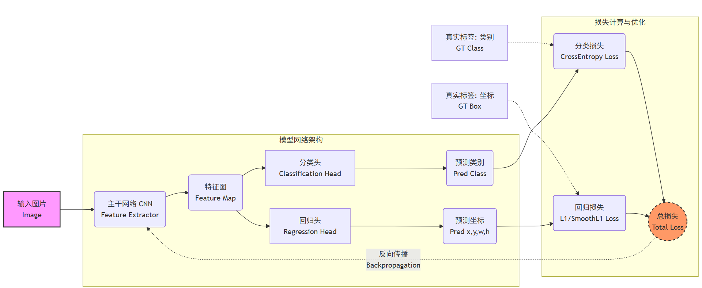
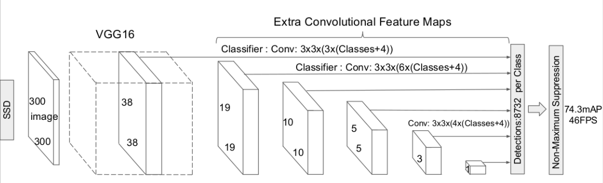
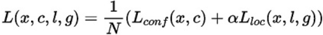
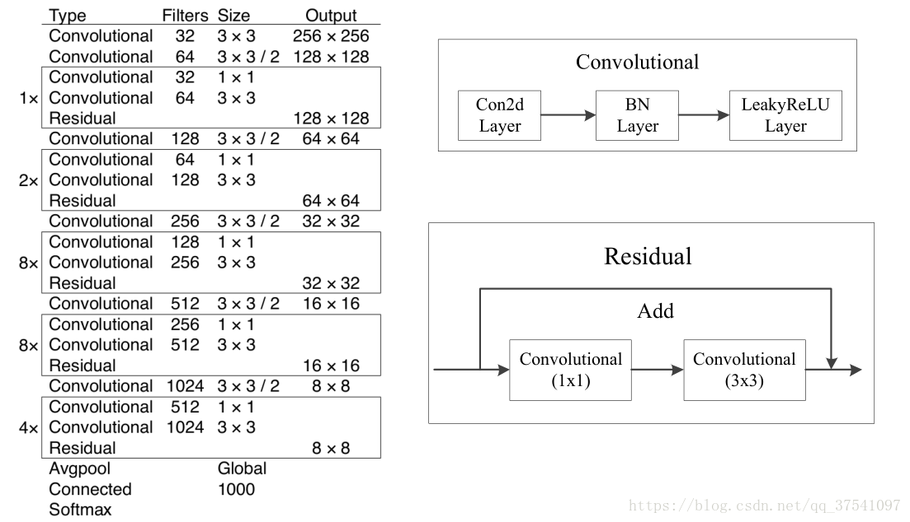
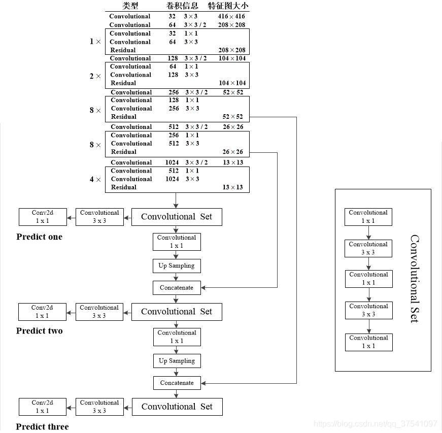

目标检测初理解
一、BaseLine
1.1 整体架构
大三上实训内容完成基础的目标检测任务，每张图片仅含有一个检测目标，将其框选并识别出来即可。基本的流程和图像分类一致，区别在数据集的标注上增加边界框的位置标签，以及在model的设计上使用分别使用分类头和位置偏移预测头来区别输出，最后训练时累计分类损失和位置偏移损失，再进行反向梯度传播并更新，大致示意图如下：

- 数据处理：将数据集标注后返回image、cls_label、loc_label(区别就在多了位置标签)
- 网络架构：主干CNN提取特征后分别使用分类头和边界框回归头预测
- 训练流程：与分类任务基本相同，主要是分别计算交叉熵损失和回归损失求和后再进行反向传播
- 推理预测：前向传播得到结果后，如果预测框和标签框iou大于设定的阈值就将预测结果显示出来
1.2 NMS(非极大抑制)
作用：从生成的多个候选框中选择最佳的一个。出于提高目标检测召回率的目的，通常会生成数量众多的候选框，可以通过设置阈值筛选置信度低的，但仍会存在几个较高的置信度的框留下来，nms的作用就是删掉冗余的框，保留最佳的框。
原理：关键就两点，一是选择置信度大的框作为可能最优的框；二是通过iou反应其他框与当前参考框的重叠程度，重叠度过大则需要抑制。
步骤：
按照置信度降序排序
选择置信度最高的比边界框添加到最终输出列表中，将其从边界框列表中删除
计算当前框与其他框的iou
设定iou阈值，将大于该iou的框抑制（删除）
重复上述步骤，直至当前边界框列表为空
二、SSD
SSD属于one-stage算法，实时速度性高。其核心是在不同尺度的特征图上直接预测类别和位置，无需先生成候选区域，主要特点是结合多尺度特征图预测、预设anchor、使用卷积预测输出。框架如下图所示，输入图片首先经过基本的卷积神经网络提取特征，得到的特征图直接使用3x3卷积预测默认框的类别和偏移量，之后通过多个卷积层处理得到不同尺度的特征图，取不同特征层检测输出，浅层特征图用于检测小目标，深层特征图用于检测大目标。

2.1 多尺度特征图预测
SSD网络结构如下所示，SSD采用VGG16作为Basenetwork，并额外添加了一些卷积层得到不同尺度大小的特征图用于检测，特征层的尺寸分别是38 × 38，19 × 19，10 × 10，5 × 5，3 × 3，1 × 1，一共6种不同的特征图尺寸。大尺度特征图（较靠前的特征图）可以用来检测小物体，而小尺度特征图（较靠后的特征图）用来检测大物体。多尺度检测的方式，可以使得检测更加充分（SSD属于密集检测），更能检测出小目标。

2.2 预设anchor
在yolov1中，直接由网络预测目标的尺寸，使得预测框没有长宽比和尺寸限制，难以训练。而SSD为特征图中每个像素生成k（4或者6）个缩放和宽高比不同的默认框，预测框在anchor的指导下微调。
2.3 使用卷积输出
采用卷积的方式预测类别和位置量而非全连接层，针对一张mxn的特征图每个像素设置k个默认框，存在num_class个类别直接使用3x3的卷积输出，输出通道为k（num_class + 1），默认框偏移量的预测输出通道为4k，所以针对该特征图总的输出为mxnxk(4+num_class+1)，*也就是保持输入和输出特征图空间上不变能一一对应。
2.4 训练细节
先验框匹配
拿到的数据集首先要讲anchor和标注的ground truth进行匹配，匹配后由anchor负责预测gt。对于一个ground truth至少要有一个anchor和他匹配作为正样本，在设定的iou之上一个gt可以和多个anchor匹配，anchor只可以和一个gt匹配，其余未和目标匹配的作为负样本（即和背景匹配）。总的来说一张图负样本比例可能还是会大。会按照置信度维持选择较大的作为负样本，保持正负比例为1:3左右。
PS：这个过程是在每个训练批次中进行的，也就是模型前向传播过程中输出特征图然后可能也会选择生成anchor，在计算损失前将这些生成的anchor与ground truth进行匹配得到anchor的类别和偏移量。
损失函数
为类别损失和位置损失两种的加权和，前者是交叉熵损失后者是smooth L1损失。

train总结
可以参考13.7. 单发多框检测（SSD） — 动手学深度学习 2.0.0 documentation中训练的部分细节，搭建的网络中每个特征图他都输出了，然后每层的anchor都是设置为4个，生成的anchor通过设置的anchor_target函数（这个函数就是把所有生成的anchor跟真实框匹配和标注，没匹配的作为背景0类）标注该anchor的类别和偏移量后再计算损失和优化。不理解可以参考deepseek答案，训练流程的顺序：
- 前向传播时输出特征图—>可能同时生成anchor
- 模型预测类别和偏移量
- 调用anchor_target函数(李沐教程中)，将生成的anchor和真实框匹配标注anchor(生成分类标签和回归目标)
- 计算损失并反向传播优化
三、YOLOv3
DarkNet53结构

输入图像为416x416x3，经过Convolutional这个基本块（conv2d+BN+LeakyReLU），前两个卷积使用了padding=1，后续就是以这个基本块做残差连接进行特征提取，这个backbone其实就是上图的DarkNet53的骨干网络。
另外最后的输出头，针对大、中、小的目标分别设置三个。 针对大一点的目标，使用backbone提取的13x13的特征图经过第一个分类头，针对中目标不仅要用26x26的特征图，还有用包含更多语义信息的13x13的特征图上采样后concat作为补充。针对小目标也是按照类似的方式，可以称为多尺度融合。
